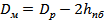
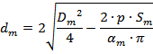
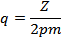
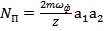
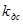

Исходные данные
– Номинальная сила тока, подаваемого на каждую фазу, А
= 29,2
– Число фаз статора машины
= 3
– Частота переменного тока, питающего машину, Гц
=50
p – Число пар полюсов в роторе машины
р = 2
φ – Угол, под которым на машину подается нагрузка, рад
φ = 0,2
= 0,98
- Коэффициент полезного действия машины
= 0,96
– Остаточная магнитная индукция, Тл, Вб/м2
= 1,17
– Коэрцитивная сила материала магнита, А/м
= 800000
 – Номинальный вращающий момент, развиваемый машиной,
Н·м
– Номинальный вращающий момент, развиваемый машиной,
Н·м
 = 24
= 24
– Падение магнитного напряжения в магнитной цепи,
можно выбрать в пределах  для ненасыщенных машин и для насыщенных машин.
для ненасыщенных машин и для насыщенных машин.
Основные расчеты
Частота вращения об/мин:
.
Угловая
скорость вращения  , рад/с:
, рад/с:
.
Номинальная мощность , Вт:
.
Напряжение фазное номинальное , В:
.
Ротор
Для электрических машин с постоянными магнитами при естественной стабилизации напряжения и при подмагничивании спинки якоря объем,, магнита при определяется по формуле
Где – мощность электрической машины, В·А, при ;
- коэффициент приведения МДС реакции якоря по продольной оси к МДС обмотки возбуждения (можно предварительно выбрать );
- коэффициент ударности (для электрических машин с ротором звездочка без полюсных башмаков , со звездообразным ротором и полюсными башмаками, с когтеобразными роторами);
- коэффициент формы кривой поля (при синусоидальной форме);
- коэффициент рассеяния в режиме холостого хода (можно выбрать предварительно по кривым на рис. 5.3). Значение зависит от типа ротора, его диаметра и числа полюсов (рис.5.3). Для роторов с магнитом звездочка без полюсных башмаков предварительно можно выбрать . Для роторов коллекторного типа с призматическими магнитами .
- напряженность поля в магните при установившемся КЗ генератора, А/м (рис. 5.4). Выбор однозначно определяется абсциссой точки К (рис. 5.4) на кривой размагничивания, соответствующей максимальной удельной энергии магнита или несколько ниже этого максимума. Для магнитов с направленной кристаллизацией, для магнико , а для альни и альнико .
- индукция в нейтральном сечении магнита при холостом ходе. берется приближенно , либо определяется по диаграмме магнита (рис. 5.4).
- кратность тока короткого замыкания. Оптимальное значение – 2. На практике выбираются большими: для ротора звездочка с полюсными башмаками 2 – 3, а без полюсных башмаков 4 – 6.
При работе без перегрузки необходимо в формулу подставлять номинальную мощность и (рис. 5.2), а если предусмотрена перегрузка
и (рис. 5.2).
Диаметр магнита :
,
Где - коэффициент заполнения поперечного сечения ротора магнитом, для самолётных двигателей выбирается в диапазоне 0,7-0,78, для тракторных 0,6-0.8; - отношение длины к диаметру магнита.
Величина выбирается в пределах ,1. При выборе величины необходимо учитывать то обстоятельство, что линейные скорости магнита не должны превосходить допустимые.
- коэффициент запаса на использование магнита, берется обычно 20-25% (1,2-1,25).
- коэффициент полюсного перекрытия. Оно показывает, какую часть полюсного деления охватывает полюс магнита. Обычно берется в диапазоне 0,55-0,8.
Длина средней магнитной линии магнита , а следовательно, и диаметр определяются размагничивающим действием МДС реакции якоря при ударном токе КЗ , так как, с одной стороны,
, см,
и, с другой стороны, при 2p=48
, см.
Длину магнита найдем из соотношения
, см.
В случае ротора звездочка без полюсных башмаков длина активной части ротора равняется аксиальной длине магнита .
Высота полюсных башмаков определяется механической прочностью сварного цилиндра и условиями прохождения магнитного потока в напуске полюсных башмаков. Предварительно высота полюсных башмаков может быть выбрана с запасом согласно табл. 5.3 (для n=8000 об/мин).
По табл. 5.3 можно сделать вывод, что отношение диаметров магнита

и
ротора  имеет примерно постоянное значение, не зависящее от
диаметра ротора .
имеет примерно постоянное значение, не зависящее от
диаметра ротора .
Высота воздушного зазора
Где Vм - объем постоянного магнита ,имеет размерность см3
Полюсное деление ротора, см:
Ширина полюсной дуги, см:
Ширина магнита (определяется как хорда дуги магнита), см:
Высота ярма звездочки, см:
Где Коэффициент высоты ярма звездочки.
Площадь сечения одного магнита, см2:
Обмоточным коэффициентом предварительно приходится задаваться. Как показывает практика, для трехфазных электрических машин при двухслойной обмотке можно взять
Линейная нагрузка на 1 магнит, Дж:
Высота одного магнита, см:
Внутренний диаметр магнита (находится из площади сечения магнита), см:

Внутренний диаметр втулки, см:
Где - Коэффициент диаметра втулки
Длина дуги полюсного башмака, см:
Где, – коэффициент, показывающий, какую часть полюсного деления занимает башмак
Статор
Площадь поверхности магнита, см2:
Магнитный поток в зазоре на 1 магнит, Вб:
Номинальная ЭДС холостого хода, В:
,
При емкостной стабилизации напряжения
Число витков в фазе:
,
Где – ЭДС холостого хода,
–коэффициент формы кривой поля; при синусоидальной форме кривой поля ;
– обмоточный коэффициент (для трехфазных электрических машин при двухслойной обмотке можно предварительно взять
Число пазов на полюс и фазу:

Выбор величины q определяется полюсным делением машины и числом фаз. Обычно выбирается целое число, однако, для машин малой мощности при 2p=6 и m=3 можно взять q=1.5; для 2p=4 выбирается q=2.5. При P=10000 Вт и 2p=4 выбирается q=2.5. Для машин большей мощности выбирается q=2.5 и q=3.5.
Число пазов статора:
Число проводников в пазу:
,
Где - число параллельных ветвей,
- число проводников в параллельных ветвях.
Ja – Допустимая плотность тока. Выбор допустимой плотности тока зависит от режима работы электрической машины, условий охлаждения. Для электрических машин, рассчитанных на длительный срок службы с самоохлаждением или охлаждением от вентилятора, выбираются Ja=6-7 А/мм2.
Площадь поперечного сечения провода определяется, исходя из допустимой плотности тока, см2:
Диаметр провода без изоляции, см:
Коэффициент диаметра изолированного провода.
Диаметр изолированного провода, см:
.
Площадь поперечного сечения изолированного провода, см2:
.
Значения коэффициента заполнения паза зависят от диаметра провода и характера изоляции. Обычно для электрических машин небольшой мощности (до 7,5 кВ·А).
При выполнении обмотки из проводов прямоугольного сечения паз выбирается прямоугольным. Размеры провода выбираются в соответствии с ГОСТ такими, чтобы ширина зубца осталась достаточной для проведения магнитного потока без насыщения и для обеспечения механической прочности зубцов. Коэффициент заполнения для прямоугольного паза.
Задаваясь коэффициентом заполнения паза, получаем площадь паза, см2:
Внутренний диаметр статора D, см:
Зубцовое деление
статора, см:
- коэффициент заполнения сталью сечения магнитопровода. При толщине листа 0.35мм берется , при толщине листа 0.2мм берется
Индукция в воздушном зазоре на 1 магнит, Вб/м2:
Для зубца с постоянным сечением необходимая ширина, см:
Обычно величина индукции паза выбирается .
– Высота клина паза мм.
– Высота шлица паза мм.
 – Отношение ширины шлица к минимальной ширине паза
– Отношение ширины шлица к минимальной ширине паза
Высота спинки якоря
,
Где - допустимая индукция в спинке якоря; для стали 141 (Э31) Тл, для сталей 27КХ и 49КФ2-ВИ Тл.
Минимальная ширина паза, см:
Ширина шлица, см:
Средняя ширина паза (находится из площади паза), см:
Максимальная ширина паза, см:
Высота паза, см:
Диаметр статора с пазами, см:
Диаметр статора внешний, см:
Расчет регуляторов
Объем ротора,, см3:
.
Плотность ротора (сталь), , кг/ см3 :
.
Масса ротора, , кг:
.
Момент инерции ротора, ,кг/м2 :
.
-коэффициент усиления преобразователя частоты.
- коэффициент передачи датчика тока.
- коэффициент передачи датчика скорости.
- малая
некомпенсируемая постоянная времени контура тока, включающая  и другие малые временные задержки и
постоянные времени, входящие в замкнутый контур тока, в частности, постоянную
времени фильтра датчика тока.
и другие малые временные задержки и
постоянные времени, входящие в замкнутый контур тока, в частности, постоянную
времени фильтра датчика тока.
- постоянная времени фильтра скорости.
Полное потокосцепление ротора, , Вб:
 .
.
Полное потокосцепление статора,, Вб:
.
Индуктивность статора, , Гн:
.
Превышение температуры обмотки статора над 20 0С:
Δt=30.
-коэффициент длины лобовой части полувитка.
- длина лобовой части полувитка, см, подсчитываемая обычными методами; в случае мягких секций двухслойной обмотки равна (1,4-1,8)tz , при однослойной равносекционной обмотке (1,4-1,6) tz , при однослойной катушечной обмотке примерно0,9 tz.
Средняя длина витка обмотки статора,, см:
).
Сопротивление обмотки статора, , Ом:
.
Пропорциональный коэффициент регулятора тока, :
.
Интегральный коэффициент регулятора тока, :
.
Постоянная времени контура скорости, :
Пропорциональный коэффициент регулятора скорости
Интегральный коэффициент регулятора скорости